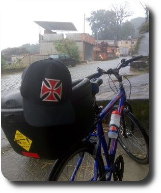

Bem-vindo à minha biblioteca de e-books!
Aproveite o conteúdo.
Os e-books são gratuitos mas se quiser colaborar
aceito PIX de qualquer valor.
chave: agi@br1.nl
Clique nos links abaixo para baixar:

Cicloturistando
PBdalando - Um tour de bike por João Pessoa
Este site está hospedado no GitHub Pages.